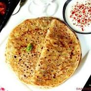

AALU ka paratha

Details
potato paratha with detailed photo and video recipe. a classical north indian stuffed bread recipe made with wheat flour and spiced potato
mash for stuffing. it is one of the popular paratha recipes which is not only easy to make but
also one of the tasty stuffed bread from the indian cuisine. it is generally served
for lunch and dinner with a choice of raita and pickle but can also be served for morning breakfast and brunch.
Ingredients
- 4 cup wheat flour
- 1 tsp salt
- water, for kneading
- 4 tbsp oil
for aloo stuffing:
- 6 potato / aloo, boiled & mashed
- 2 tsp ginger paste
- 4 chilli, finely chopped
- 4 tbsp coriander, finely chopped
- 1 tsp coriander seeds
- 0.5 tsp ajwain / carom seeds
- 2 tsp chilli powder
- 1 tsp cumin powder
- 1 tsp garam masala
- 1.5 tsp aamchur
- 1 tsp salt
other ingredients:
- wheat flour, for dusting
- oil, for roasting
after this we can start!
Instructions
how to make dough for paratha:
- firstly, in a large bowl take 2 cup wheat flour and ½ tsp salt. mix well.
- add water as required and start to knead.
- now add 2 tbsp oil and start to knead well.
- knead to a smooth and soft dough.
- grease oil and rest for 20 minutes.
how to make aloo stuffing for paratha:
- firstly, in a large bowl take 3 potato, 1 tsp ginger paste, 2 chilli, 2 tbsp coriander and ½ tsp coriander seeds.
- also, add ¼ tsp ajwain, 1 tsp chilli powder, ½ tsp cumin powder, ½ tsp garam masala, ¾ tsp aamchur and ½ tsp salt.
- mix well making sure all the ingredients are well combined.
- aloo stuffing is ready.
how to make aloo paratha:
- after the dough has rested for 20 minutes, knead slightly.
- now pinch a ball sized dough and roll about 4 inches in diameter
- place a ball sized prepared aloo stuffing in the centre.
- take the edge and start pleating bringing it to the centre.
- also join the pleats together and secure tight pinching off excess dough.
- sprinkle some wheat flour and roll slightly thick.
- on a hot tawa place the rolled paratha and cook for a minute.
- furthermore, flip the paratha when the base is partly cooked (after a minute).
- also, brush oil / ghee and press slightly. flip again once or twice till both the sides are cooked properly.
- finally, serve hot aloo paratha with sauce, raita or pickle.
okay i hope you enjoy it as much as i do!!